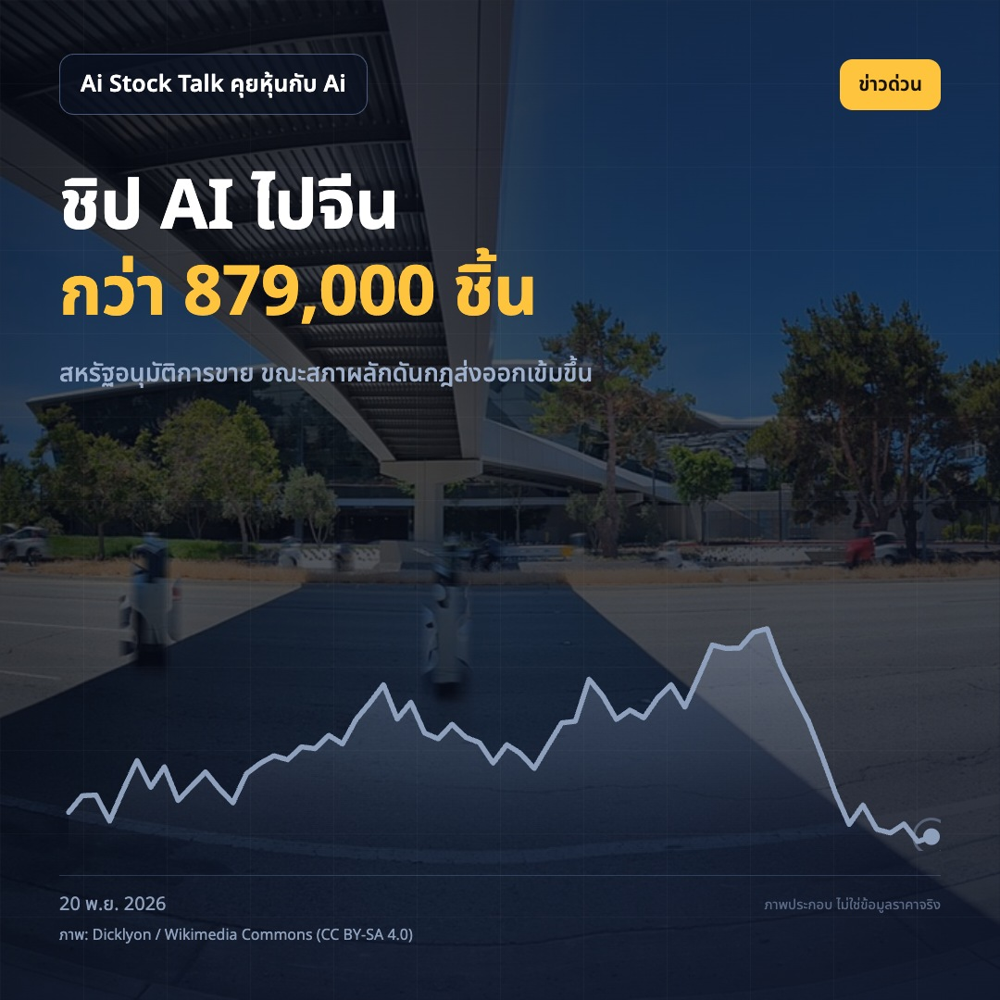
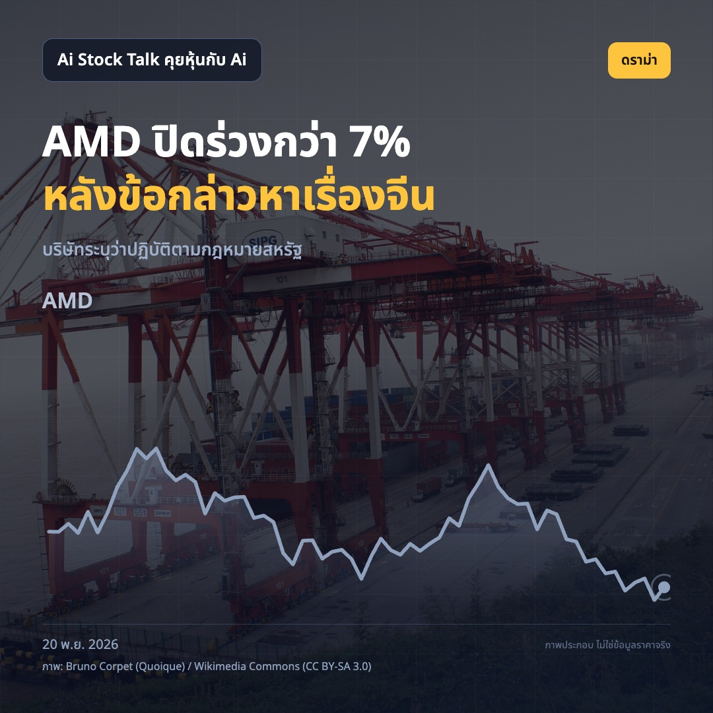
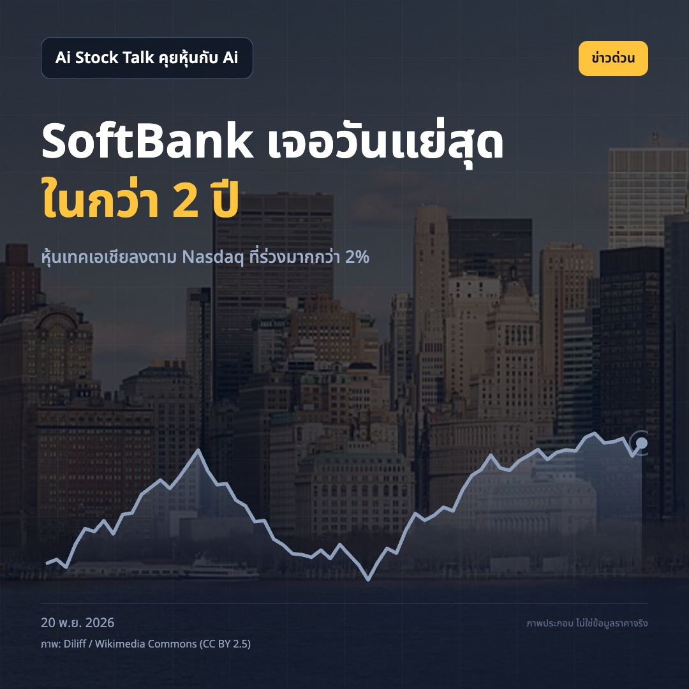
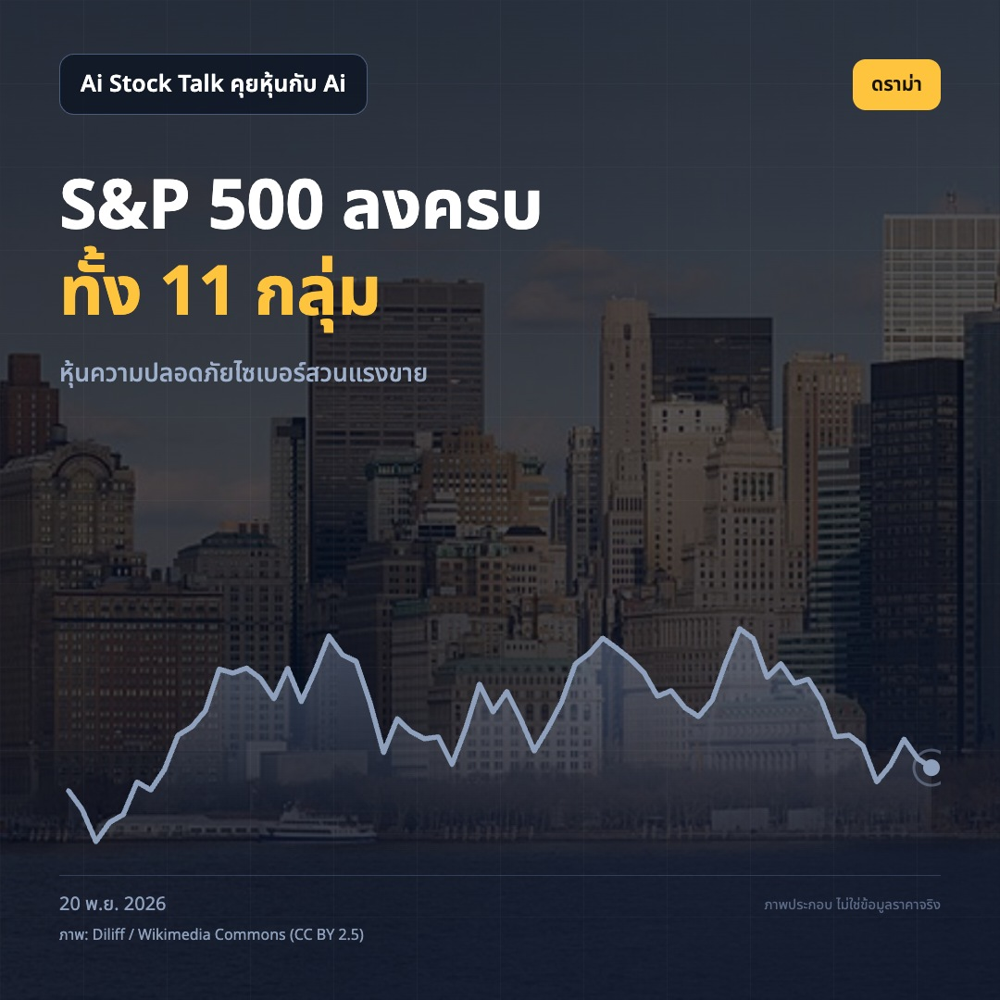

1. Anthropic เข้าตลาดวันแรก ปิดบวก 17%

Anthropic ปิดวันแรกที่ 97.17 ดอลลาร์ บวก 17% บริษัทเข้าซื้อขายใน Nasdaq ด้วยชื่อย่อ ANT หลังตั้งราคาขายหุ้นที่ 83 ดอลลาร์ และระหว่างวันขึ้นไปสูงสุด 111.50 ดอลลาร์ ราคาปิดทำให้บริษัทมีมูลค่าราว 1.27 ล้านล้านดอลลาร์ ขึ้นเป็นบริษัทที่มีมูลค่าสูงอันดับ 12 ของโลก แต่หุ้นเทคโนโลยีโดยรวมไม่ได้ขึ้นตามการเปิดตัวครั้งนี้ ทำไมต้องสน: นักลงทุนไทยที่ถือหุ้นสหรัฐได้เห็นราคาที่ตลาดยอมจ่ายให้บริษัท AI รายใหญ่แล้ว ขณะเดียวกันก็ต้องดูว่าความสนใจใน ANT จะส่งต่อถึงหุ้น AI ตัวอื่นหรือไม่ ถ้าคุณถือหุ้น AI อยู่ การเข้าตลาดของ ANT ทำให้คุณอยากเพิ่มหรือทบทวนน้ำหนักลงทุน? ที่มา: https://www.blognone.com/node/152212 https://www.marketwatch.com/story/after-anthropics-bittersweet-ipo-heres-what-lies-ahead-8c32fdb7
หุ้นAI #Anthropic #หุ้นสหรัฐ
ภาพ: ESO/P. Horálek / Wikimedia Commons (CC BY 4.0)
2. Nvidia ใกล้ 150 ดอลลาร์ หลังร่วงจากจุดสูงสุดเกือบ 40%

Nvidia ร่วงจากจุดสูงสุดเกือบ 40% ราคาหุ้นในวันพฤหัสบดีอยู่แถว 150 ดอลลาร์ หลังจากทำจุดสูงสุดไว้เมื่อวันที่ 6 ตุลาคม แรงขยับขึ้นช่วงสั้นหลังรายงานผลประกอบการไตรมาสสามหายไป ขณะที่ Anthropic ซึ่งเป็นลูกค้ารายใหญ่ของ Nvidia เพิ่งเข้าซื้อขายใน Nasdaq ภาพนี้เกิดขึ้นในช่วงที่ตลาดกำลังจับตาความปั่นป่วนด้านผู้นำของ Nvidia ทำไมต้องสน: คนถือกองทุนหุ้นสหรัฐหรือหุ้น AI ควรดูน้ำหนัก Nvidia ในพอร์ต เพราะหุ้นผู้ขายชิปกับลูกค้า AI กำลังถูกตลาดให้ราคาต่างกัน ถ้าพอร์ตคุณมี Nvidia อยู่ การลดลงจากจุดสูงสุดครั้งนี้เปลี่ยนมุมมองคุณหรือยัง? ที่มา: https://www.theverge.com/ai-artificial-intelligence/1038063/nvidia-stock-market-price-earnings
Nvidia #หุ้นชิป #หุ้นAI
ภาพ: Dicklyon / Wikimedia Commons (CC BY-SA 4.0)
3. สหรัฐอนุมัติขายชิป AI ให้บริษัทจีนมากกว่า 879,000 ชิ้น

สหรัฐอนุมัติขายชิป AI ให้จีนกว่า 879,000 ชิ้น สมาชิกสภาคองเกรสระบุว่ากระทรวงพาณิชย์สหรัฐอนุมัติการขายชิป AI ให้บริษัทจีนในจำนวนดังกล่าว ขณะเดียวกัน สมาชิกสภาบางส่วนกำลังผลักดันกฎหมายเพื่อคุมการส่งออกชิปไปจีนให้เข้มงวดขึ้น หลังเกิดประเด็นเกี่ยวกับ Jensen Huang การอนุมัติที่เกิดขึ้นกับข้อเสนอให้เพิ่มข้อจำกัดกำลังเดินไปพร้อมกัน ทำไมต้องสน: คนถือหุ้นชิปต้องติดตามทิศทางกฎส่งออก เพราะกฎนี้เกี่ยวข้องโดยตรงกับการขายชิป AI ให้ลูกค้าในจีน คุณคิดว่าประเด็นนี้ควรมีน้ำหนักแค่ไหนเวลาประเมินหุ้นชิปในพอร์ต? ที่มา: https://www.cnbc.com/2026/11/19/nvidia-amd-china-chip-sales-congress.html
ชิปAI #หุ้นชิป #จีนสหรัฐ
ภาพ: Dicklyon / Wikimedia Commons (CC BY-SA 4.0)
4. AMD ปิดร่วงกว่า 7% หลังข้อกล่าวหาเรื่องจีน

AMD ปิดร่วงกว่า 7% หลังรายงานผู้ขายชอร์ต ผู้ขายชอร์ตกล่าวหาว่าพบเฟิร์มแวร์ของ AMD ในบริษัทจีนที่อยู่ในบัญชีดำ AMD ระบุว่าบริษัทปฏิบัติตามกฎหมายสหรัฐ ส่วนข้อกล่าวหาดังกล่าวยังเป็นข้อกล่าวหาจากรายงานผู้ขายชอร์ต ราคาหุ้นที่ลดลงสะท้อนว่าตลาดให้ความสำคัญกับประเด็นการขายเทคโนโลยีให้จีน ทำไมต้องสน: นักลงทุนไทยที่ถือ AMD หรือกองทุนหุ้นชิปควรติดตามทั้งข้อกล่าวหาและคำชี้แจงของบริษัท ก่อนประเมินว่าความเสี่ยงนี้กระทบพอร์ตอย่างไร เมื่อข้อมูลสองฝ่ายยังต่างกัน คุณจะรอหลักฐานเพิ่มหรือปรับน้ำหนักหุ้น AMD ตอนนี้? ที่มา: https://www.cnbc.com/2026/11/19/amd-falls-on-short-seller-report-of-alleged-china-exposure.html
AMD #หุ้นชิป #หุ้นสหรัฐ
ภาพ: Bruno Corpet (Quoique) / Wikimedia Commons (CC BY-SA 3.0)
5. SoftBank เจอวันแย่สุดในกว่า 2 ปี หลังหุ้น AI เอเชียร่วง

SoftBank เจอวันแย่สุดในกว่า 2 ปี หุ้นเทคโนโลยีเอเชียปรับลงตามแรงขายหุ้น AI หลังดัชนี Nasdaq ซึ่งมีหุ้นเทคโนโลยีจำนวนมาก ร่วงมากกว่า 2% ในคืนก่อนหน้า แรงขายเกิดขึ้นหลัง Anthropic เข้าซื้อขายในตลาดหุ้นสหรัฐซึ่งมีผู้จับตาอย่างมาก การเปิดตัวของหุ้น AI รายใหญ่จึงไม่ได้ทำให้หุ้นเทคโนโลยีเอเชียปรับขึ้นตาม ทำไมต้องสน: นักลงทุนไทยที่ถือกองทุนหุ้นเอเชียหรือกองทุนธีม AI ควรดูว่าพอร์ตมีหุ้นเทคโนโลยีเอเชียมากเพียงใด เมื่อแรงขายจากสหรัฐส่งต่อมาถึงภูมิภาค พอร์ตของคุณมีหุ้น AI ฝั่งเอเชียมากกว่าฝั่งสหรัฐหรือเปล่า? ที่มา: https://www.cnbc.com/2026/11/20/softbank-ai-tech-stocks-slide-anthropic-debut.html
SoftBank #หุ้นAI #หุ้นเอเชีย
ภาพ: Diliff / Wikimedia Commons (CC BY 2.5)
6. หุ้นสหรัฐลงครบ 11 กลุ่ม แต่หุ้นไซเบอร์สวนตลาด

หุ้นสหรัฐลงครบ 11 กลุ่ม หุ้นไซเบอร์สวนทาง ตลาดหุ้นสหรัฐในวันพฤหัสบดีอ่อนตัวทั่วทั้ง 11 กลุ่มธุรกิจของดัชนี S&P 500 ในจำนวนนั้น 10 กลุ่มลดลงมากกว่า 1% แต่หุ้นด้านความปลอดภัยไซเบอร์ปรับขึ้นสวนแรงขาย นี่เป็นภาพตลาดที่การลงไม่ได้จำกัดอยู่แค่หุ้น AI หรือหุ้นชิป ทำไมต้องสน: คนไทยที่ถือกองทุนหุ้นสหรัฐควรดูทั้งภาพรวมตลาดและหุ้นที่พอร์ตถือจริง เพราะการกระจายลงทุนตามกลุ่มธุรกิจอาจยังเจอวันที่หลายกลุ่มลงพร้อมกัน เวลาตลาดลงกว้างแบบนี้ คุณดูดัชนีรวมก่อนหรือเปิดดูหุ้นแต่ละตัวในพอร์ต? ที่มา: https://www.marketwatch.com/story/these-were-the-only-stocks-that-rose-amid-the-stock-markets-wipeout-thursday-1eaf32ba?mod=mw_rss_topstories
หุ้นสหรัฐ #ตลาดหุ้น #หุ้นไซเบอร์
ภาพ: Diliff / Wikimedia Commons (CC BY 2.5)